En cette année 2021, on célèbre dans le monde entier le vingt-cinquième anniversaire de la franchise Pokémon. Pour cette occasion, nous vous présentons le jeu Pokemon Invaders 3D!
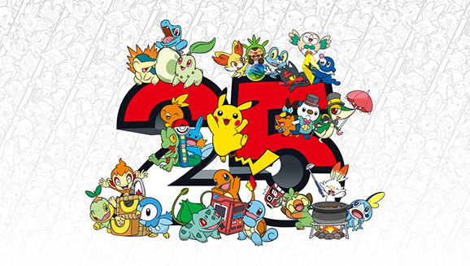
Déroulement du jeu
Un écran d'accueil à l'effigie de Pokémon affiche le nom du jeu Pokemon
Invaders 3D, le nom de l'auteur Manon SAUVAGEOT, les Pokémons à attraper et leurs points.
Le dresseur doit cliquer sur le bouton 'Attrapez les tous' pour commencer une partie et démarrer le premier combat.
Durant la partie, le dresseur gagne des points en lançant des Pokéballs pour attraper les Pokémons qui oscillent horizontalement tout en se rapprochant pour attaquer.
Le dresseur perd des points de vie s'il est touché par une attaque Pokémon. La barre de vie se trouve en haut à droite de l'écran.
Le combat continue tant que le dresseur a encore ses trois vies et tant que les Pokémons ne sont pas arrivés dans la zone de ses abris.
La fin du combat affiche "Game Over !" et le score si le dresseur perd. Il est alors possible de revenir à la page d'accueil pour retenter sa chance.
La fin du combat affiche "Victoire !" et le score si le dresseur gagne. Il peut ensuite continuer vers le niveau suivant.
Le dresseur peut participer à trois combats à la suite lors d'une partie à l'image des arènes Pokémon. Chaque combat est de plus en plus dur et le dresseur ne récupère pas la vie qu'il a perdu.
La page d'acceuil affiche également le score le plus élevé que le dresseur a eu lors d'une partie.
Les librairies EffectComposer, RenderPass, HalftonePass sont utilisées pour l'effet post-processing.
La librairie GLTFLoader est utilisée dans les classes pour charger les modèles 3D des Pokémons, du dresseur et des projectiles.
La librairie TrackballControls est utilisée pour la caméra.
Graphisme
Les Pokémons du jeu ont un aspect 3D et sont animés. Ils se déplacent horizontalement et se rapprochent du dresseur petit à petit. Les quatre premiers Pokémons sont ceux qu'il faut absolument attraper pour gagner le combat.
Le dernier Pokémon est un Pokémon légendaire qui ne s'attrape pas facilement, il vous rapportera donc des points bonus si vous l'attrapez.
Tous les objets de la scène ont divers matériaux notamment les abris du dresseur qui ont pour texture les cartes Pokémons de ceux que l'on doit attraper.
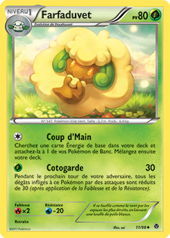
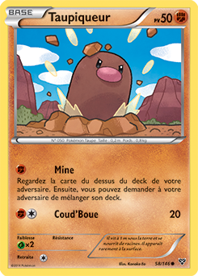
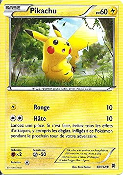
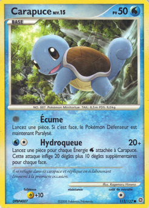
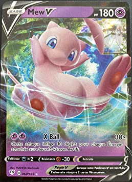
Le dresseur et ses projectiles, et ceux des Pokémons ont également un aspect 3D et sont animés.
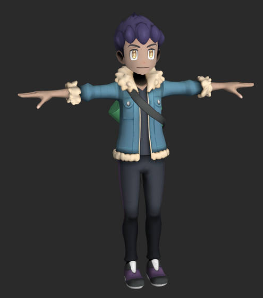
Dresseur
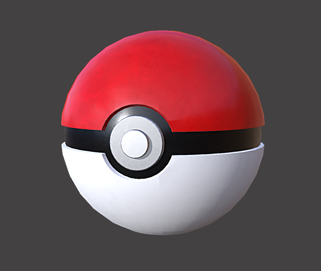
Pokéball lancée par le dresseur
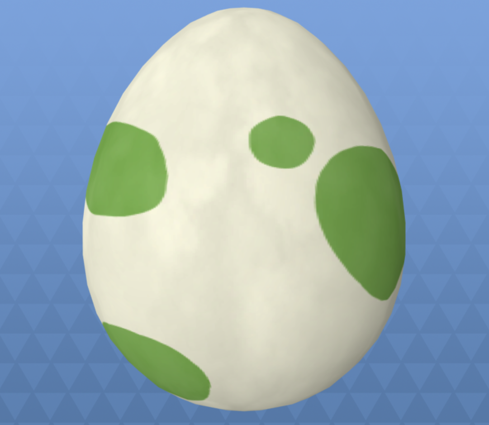
Oeufs lancés par les Pokémons
Un effet de post-processing rgb halftone est utilisé lorsqu'un abris est touché. L'effet est désactivable avec la touche 's'.
Effet post-processing
Dialogues avec l'utilisateur
Un message apparaît sur l'écran lors de la transition d'un niveau à l'autre.
La touche 'h' permet l'affichage du Pokédex avec le récapitulatif des raccourcis clavier disponibles.
La touche 'p' permet de mettre le jeu en pause et affiche un message sur l'écran.
Les Pokéballs lancées par le dresseur disparaissent quand elles ont touché un Pokémon, quand elles atteignent le bout du terrain ou quand elles touchent un abri.
Les oeufs lancés par les Pokémons disparaissent quand ils ont touché le dresseur, quand ils atteignent le bout du terrain ou quand ils touchent l'un des abris du dresseur.
Les dégâts sur les abris du dresseur sont matérialisés par une baisse de leur opacité ainsi que par un effet de post-processing si celui-ci est activé.
Les captures des Pokémons et les attaques sur le dresseur sont matérialisées par des effets sonores.
Dynamique
Le dresseur peut se déplacer le long du terrain grâce aux touches directionnelles droite et gauche pour se cacher derrière les abris, capturer les Pokémons ou esquiver leurs attaques.
Le dresseur lance des Pokéballs grâce à la touche espace. Celles-ci tournent sur elles-même grâce à la vitesse.
Les Pokémons se déplacent horizontalement et se rapprochent du dresseur petit à petit.
Le Pokémon légendaire tourne sur lui même, et se déplace au fond du terrain. Plus il passe sur le terrain, plus long sera le temps d'attente avant qu'il ne revienne.
Les Pokémons lance des oeufs sur le dresseur de façon aléatoire. Les oeufs tournent sur eux-même avec la vitesse.
Plus les niveaux augmentent, plus la vitesse d'attaque des Pokémons augmente.
Plus les Pokémons se rapprochent, plus ils lancent leurs oeufs rapidemment.
Plus les niveaux avancent, plus la dextérité du dresseur pour lancer les Pokéballs augmente.
Musique et sons
Pour une immersion totale dans le combat, des effets sonores ont été ajoutés. Il est possible de couper la musique et tous les effets sonores pour vous concentrer grâce à la touche 'm' et de les réactiver plus tard.
Lorsque le dresseur capture un Pokémon, vous pourrez entendre le bruit de la Pokéball se refermer.
Vous pourrez aussi entendre le bruit de l'attaque et la perte de vos points de vie.
Si vous perdez votre combat, pas de panique, en revenant à la page d'accueil vous passerez par le centre Pokémon.
Enfin vous pouvez jouer en chantant à tue tête le générique mythique de Pokémon lors du Niveau 1.
Attention! Fini la rigolade pour les niveaux suivants, vous aurez le droit à la musique entrainante des arènes des Champions.
Triche
Prévoyez vos potions et Pokéballs magiques pour vous aider durant le combat !
La potion Touche 'i' : vous permet de devenir invincible. En effet les Pokémons sont repoussés, ne
se rapprochent plus et vous ne perdez plus de vie si vous êtes touché par une attaque Pokémons.
Attention tout de même, si vous utilisez une potion Touche 'i' alors que vous étiez déjà invincible, l'effet sera annulé.
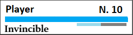
La Pokéball Touche 'k' : vous permet de capturer instantanément tous les Pokémons et donc de pouvoir passer au niveau suivant!
Par contre aucun point ne vous sera accordé si vous utilisez cette Pokéball.
Les petits plus !
Les différents niveaux sont représentés par un Pokémon qui évolue au fil des niveaux.
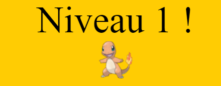
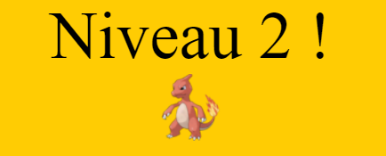
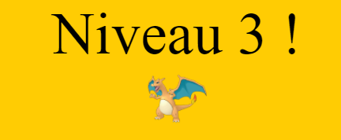
Le niveau de vie du dresseur est matérialisé comme dans les jeux Pokémons.
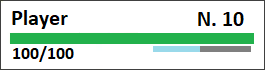
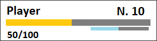
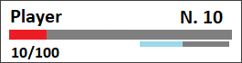
Pikachu, Pokémon emblématique, est présent dans le jeu.
Le jeu se base sur le concept des arènes Pokémons, plusieurs combats lors d'une partie. C'est également pour cela que vous ne récupérez pas vos points de vie pour les niveaux suivants et que les dégâts sur vos abris restent visible.